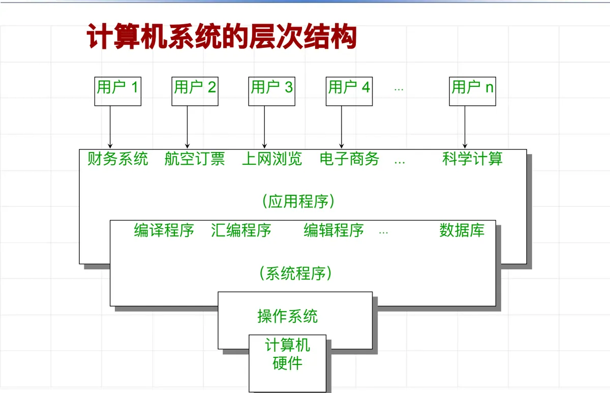
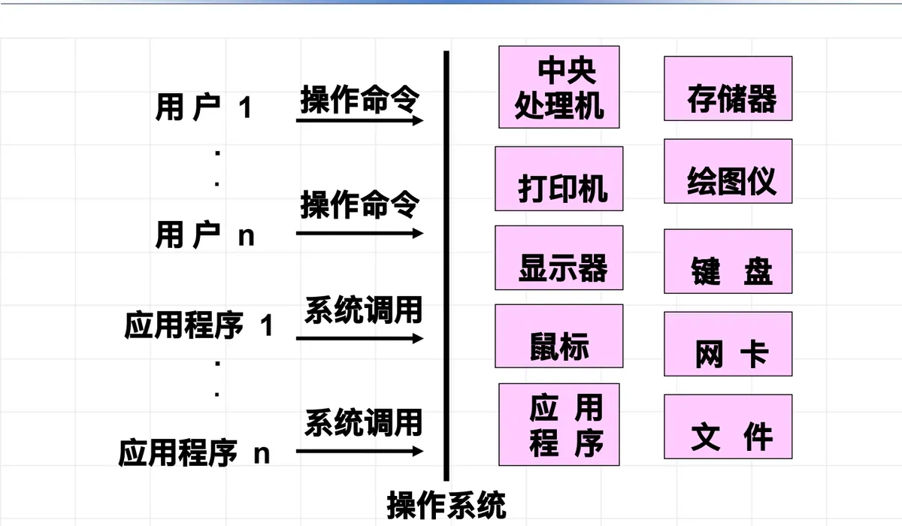

操作系统原理 · 第 1 章 绪论
1.4 操作系统的定义和特性
前面两节从发展史和类型两个角度看了操作系统，这一节要把它「是什么」讲清楚：先看它在计算机系统层次结构中的位置，再从三个目的出发解释为什么必须有它，然后给出定义，最后落到它区别于其他软件的三条特性——并发性、共享和不确定性。
1. 计算机系统的层次结构
一个计算机系统是分层组织起来的。从最上面往下看：最外层是使用机器的各类用户；用户之下是应用程序，比如财务系统、航空订票、上网浏览、电子商务、科学计算等，它们面向具体的业务；再往下是系统程序，包括编译程序、汇编程序、编辑程序、数据库等，它们为应用程序和用户提供工具与运行支撑；再往下是操作系统；最底层是计算机硬件。

这个层次结构说明了两件事：操作系统向下紧贴硬件，向上支撑系统程序与应用程序；用户和应用软件并不直接与硬件打交道，中间那一层就是操作系统。
2. 为什么引入操作系统
把操作系统放进这个位置，是为了同时达成三个目的。
（1）提供良好的、一致的用户接口，屏蔽不同硬件的差别
硬件千差万别，直接操作硬件的负担极重。以存储为例：用户想把一批信息存储到某个设备上，必须先弄清楚该设备的存储格式、读写命令和各种情况下的中断处理步骤。让普通用户去了解这些物理细节将会十分困难，甚至束手无策。操作系统把设备的差异统一包起来，对外只提供一致的接口，程序或用户就不必再关心底下是哪一款硬件。
（2）扩展硬件的功能
操作系统能在裸机之上「造出」原本不存在的功能，这正是它最有价值的地方之一。两个典型例子：在裸机上加上虚拟存储管理软件，用户就有了硕大的编程空间，不必涉及物理存储空间的容量、地址转换、程序重定位等物理细节；加上窗口管理软件，一台物理屏幕被改造成多个窗口，每个应用在各自的窗口中操作，用户可以在窗口环境中方便地与计算机交互。
这种「用软件把硬件改造成更好用的机器」的思路，就是下一章要展开的操作系统虚拟机：从用户角度看，他面对的已经不是裸机，而是操作系统提供的一台功能更强、使用更方便的虚拟机。
（3）提高计算机系统的资源利用率
一个程序或用户独占计算机系统时，资源利用率很低——CPU 等 I/O 的时候，内存和外设也在陪着空转。因此必须让多个程序或多个用户同时使用计算机，也就是并发。并发带来的好处立竿见影，但也带来了新麻烦，比如：三个需要打印输出的应用程序在同时运行，打印机上三个程序的输出结果会交错夹杂、混乱不堪。谁来分配打印机、谁来保证一个程序的输出不被别人插进来？这些正是操作系统要解决的问题，也是下一节「资源管理功能」的内容。
3. 操作系统的定义
综合以上，可以给操作系统下一个定义：
操作系统是一个大型的系统程序，它负责计算机的全部软、硬资源的分配、调度工作，控制和协调并发活动，实现信息的存取和保护。它提供用户接口，使用户获得良好的工作环境。
这个定义里有四个要点：负责资源分配与调度、控制和协调并发活动、实现信息存取与保护、提供用户接口。它带来的结果是使整个计算机系统实现高度自动化、高效率、高利用率、高可靠性。因此，操作系统是整个计算机系统的核心；用一句话概括它的宗旨，就是提高计算机的使用效率，方便用户使用。

图 2 把定义中的两种接口画得很清楚：用户通过操作命令使用系统，应用程序通过系统调用请求系统服务；无论从哪条路进来，最终都由操作系统去调度底层的处理机、存储器和各种设备。
4. 操作系统的特性
与一般应用程序相比，操作系统有三条鲜明特性，它们都是从「多个程序一起跑」这件事派生出来的。
（1）并发性
并发性（Concurrence）指两个或两个以上的事件或活动在同一时间间隔内发生——注意是「同一时间间隔内」，不是「同一时刻」。单机操作系统的并发性体现在切换、保护和同步三个方面：处理机在不同程序之间来回切换，切换时要保护现场，并发的程序之间还要同步。多处理器系统则进一步具备真正的并行能力。
并发性的价值在于：它能够消除系统中部件与部件之间的等待，有效地改善系统资源的利用率，改进系统的吞吐率，提高系统效率。
（2）共享
共享指多个计算任务共同使用计算机系统中的资源，比如 CPU 资源、内存资源、磁盘文件和其他硬件设备。与共享性有关的问题是资源分配、信息保护、存取控制等，必须妥善解决好这些问题——前面「三个程序抢一台打印机」的例子，说的就是没有处理好共享会是什么样子。
并发和共享是同时存在的：程序的并发执行必然要求对资源的共享；反过来，也正是因为有共享，才需要把并发管理起来。
（3）不确定性
不确定性指操作系统必须随时对以不可预测的次序发生的事件进行响应。系统面对的事件几乎都是随机的：
- 作业到达系统的类型和时间是随机的；
- 操作员发出命令或按按钮的时刻是随机的；
- 程序运行发生错误或异常的时刻是随机的；
- 各种各样硬件和软件中断事件发生的时刻是随机的。
同样的程序、同样的输入，在两次运行中经历的先后次序可能完全不同，运行结果和运行时间却仍要在可接受范围内——这就要求操作系统在任何一种事件交错下都能正确工作。理解了这一点，就能理解后面为什么要花大力气讲中断处理（2.5 节）、进程同步与互斥（第 4 章）和资源分配策略（第 5 章）。
本节小结
- 计算机系统的层次结构自上而下是：用户 → 应用程序 → 系统程序 → 操作系统 → 计算机硬件；操作系统向下贴近硬件、向上支撑用户与应用软件；
- 引入操作系统的三个目的：提供良好的、一致的用户接口以屏蔽硬件差别；扩展硬件的功能（虚拟存储、窗口管理）；提高计算机系统的资源利用率（依靠多个程序或用户并发使用）；
- 操作系统是一个大型的系统程序：负责全部软硬资源的分配与调度，控制和协调并发活动，实现信息的存取和保护，提供用户接口；它是整个计算机系统的核心，宗旨是提高使用效率、方便用户使用；
- 用户经操作命令、应用程序经系统调用获得操作系统服务，底层资源由操作系统统一管理；
- 三条特性：并发性（同一时间间隔内发生多个活动，带来切换、保护、同步问题）、共享（多个任务共用 CPU、内存、文件、设备，涉及资源分配、信息保护、存取控制）、不确定性（作业到达、人工命令、程序异常、中断事件的发生时刻都是随机的）；并发与共享互为条件。